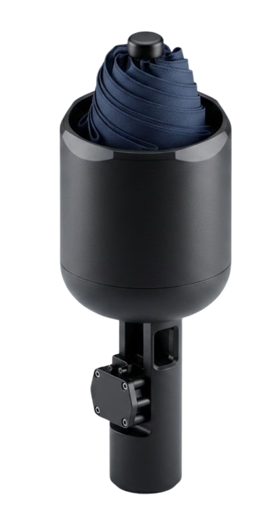

Liminal Umbrella
A self-closing, self-containing umbrella system that eliminates the reach-and-pull motion behind conventional umbrellas' worst moment: getting in the car.
Full write-up →Physical products, medical devices, and design studies — spanning human-centered design and process engineering.

A self-closing, self-containing umbrella system that eliminates the reach-and-pull motion behind conventional umbrellas' worst moment: getting in the car.
Full write-up →
A solution that ensures laundry pods fully dissolve and clean clothes as intended.

A 3D modeling calibration tool designed for Shriners Children's Hospital to validate their 3D motion-capturing system.

A one-handed PS4 controller extension designed for a stroke survivor, enabling him to play FIFA 22 with his left hand.

A low-cost arm rehabilitation machine inspired by MIT's Bionik Lab: InMotion ARM.

Handcrafted from molded plywood with a sand-toned finish — a lightweight, portable lounge chair that blends into any serene or coastal setting.
Liminal Umbrella tackles the moment every umbrella fails: the transition from rain protection to storage, especially getting into a car. Through interviews, surveys, and observational research, we identified three unmet needs — clean storage after use, smoother transitions in tight spaces, and reduced handling burden when carrying other things. Benchmarking three umbrella archetypes confirmed it: all failed vehicle-entry clearance, and closure consistently required an awkward two-handed reach-and-pull motion.
We designed a lower-shaft handle actuation system that lets the umbrella close with a single, low-effort motion at the handle — no reaching up the shaft required. The final prototype integrates a ratchet-and-pawl mechanism for incremental, controlled collapse, a 2:1 pulley system that halves the force needed to close it, and a coordinated release button that resets the whole system in one press. It hits the target spec: zero-inch reach and 3.8 kg (~37 N) pull force, within our 40 N goal, while producing the smooth, single-motion close users asked for in testing.
We filed a provisional patent on the mechanism as a team of four.